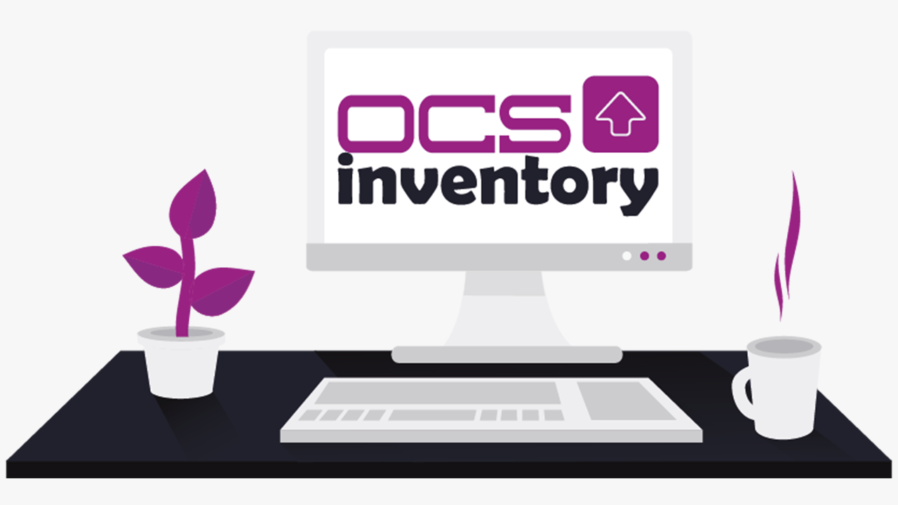
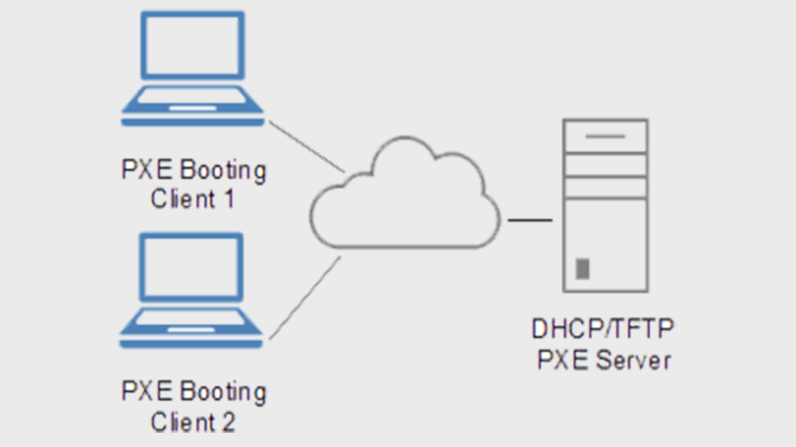

VPN IPsec Site to Site avec Pfsense
Un routeur firewall puissant et simple d'utilisation pour tous vos besoins en administration réseau.
Lire »
Tunnel EoIP sur MikroTik CHR avec IPsec
Interconnection de trois sous réseaux différents avec DHCP distant sans utiliser de relais DHCP.
Lire »

Lire »
OCS Inventory NG sous Debian 11
Outils d'inventoring libre gratuit que vous pouvez utiliser pour gérer votre parc informatique.
Lire »

Lire »
Preboot Execution Environment (PXE) sur MikroTik CHR
Découvrez un autre moyen simple et efficace d'installer les OS parle réseau.
Lire »